Caso 02 / 03
Weris
- Cliente
- Rol
- Marketing strategist · Productor audiovisual
- Año
- Sep 2025 — Ene 2026
- Servicios
- Campañas · Contenido para redes · Notificaciones push · Patrocinios
Sobre el proyecto
Weris es una plataforma de delivery que conecta a los usuarios con restaurantes y comercios locales, con una experiencia rápida y accesible para pedir a domicilio.
01
Con #WerisMyFood contamos las historias de los restaurantes que formaban parte de Weris. La campaña buscó destacar a las personas detrás de cada negocio y crear un vínculo más humano entre los usuarios y la plataforma.
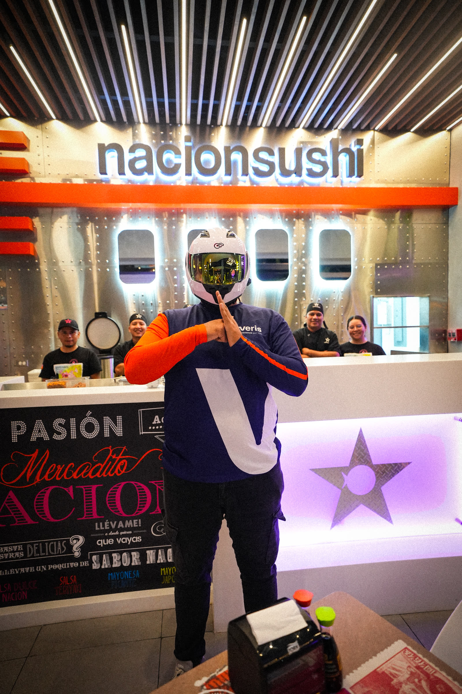
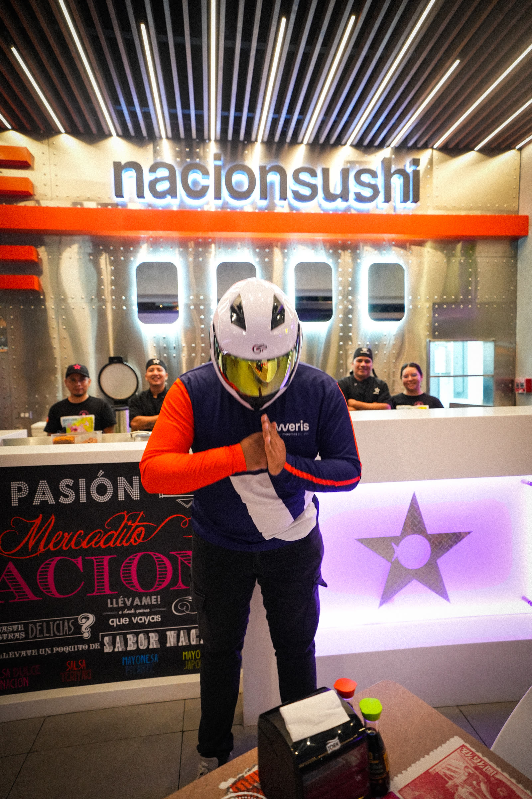
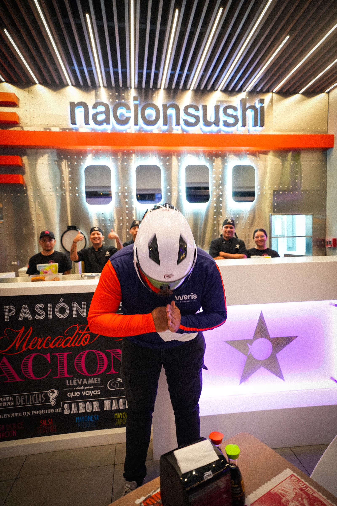
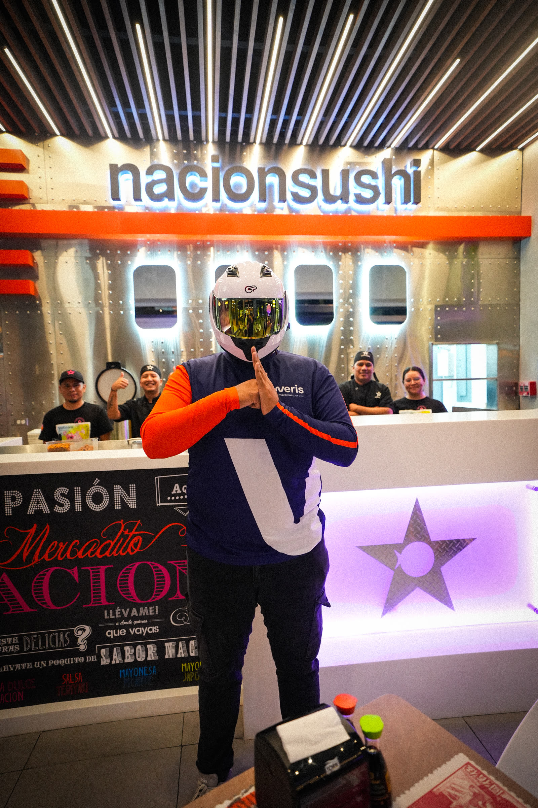
Cobertura Nación Sushi · Epic Plaza
Marcas con las que trabajamos
Nación Sushi, San Martín, Pizza Boom, Caliche Sports, La Tambora, La Cava, Los Ranchos, Koi, y más
02
Weris Experience
Weris Experience fue el lanzamiento de una nueva función dentro de la app para descubrir eventos. Para darla a conocer desarrollamos publicaciones en redes sociales y notificaciones push dentro de la aplicación, que generaron awareness y llevaron tráfico a la nueva experiencia.
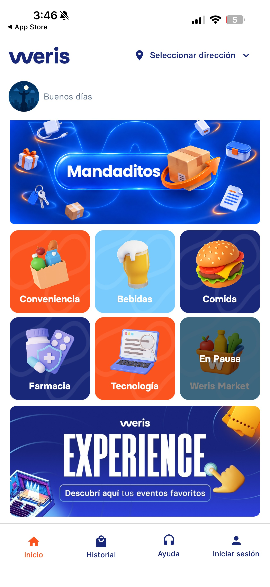
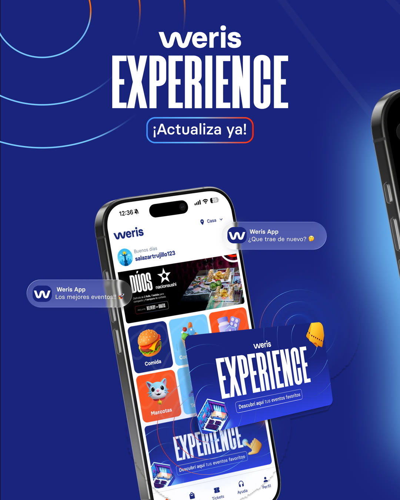
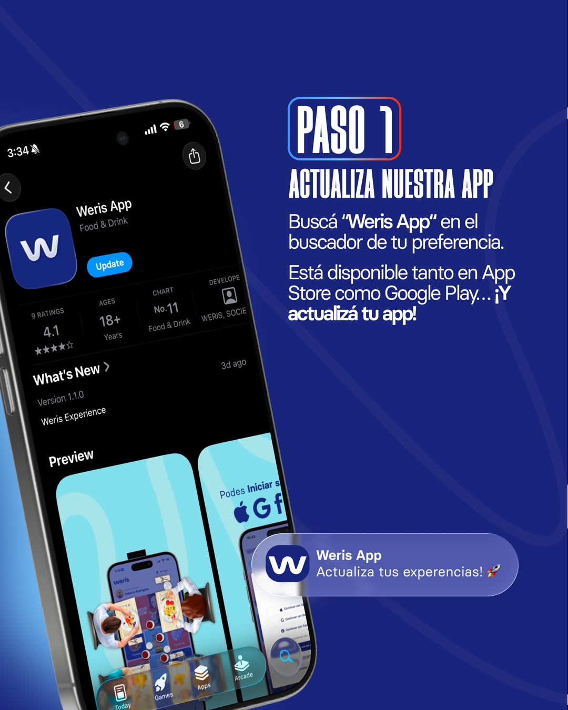
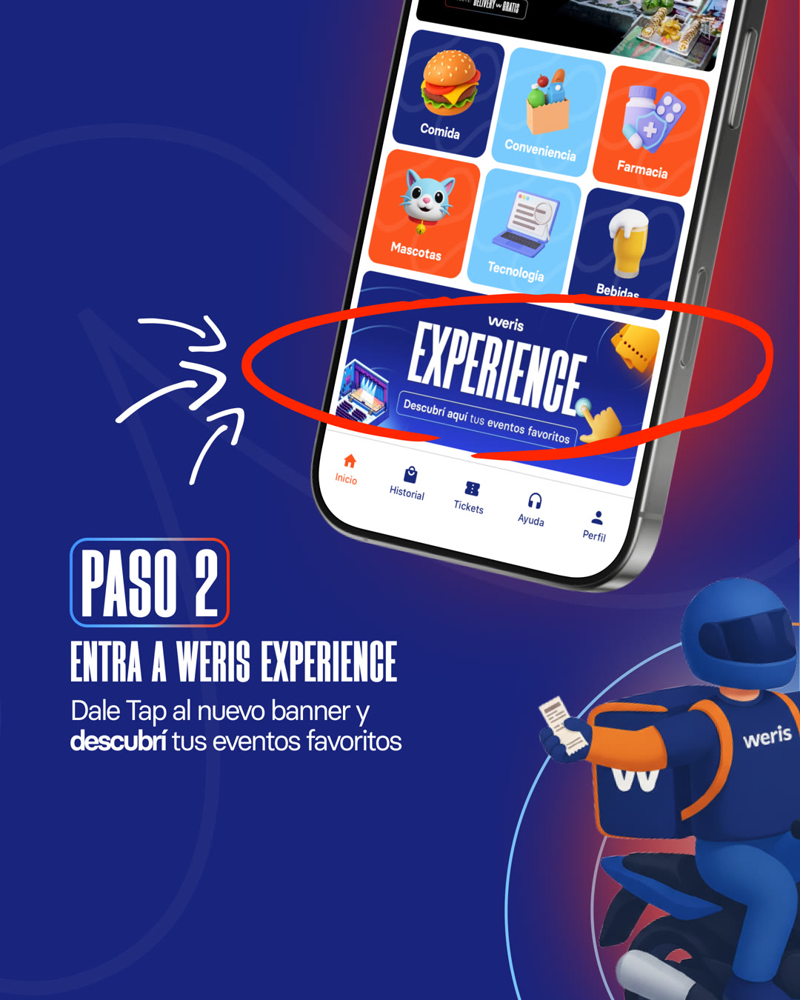
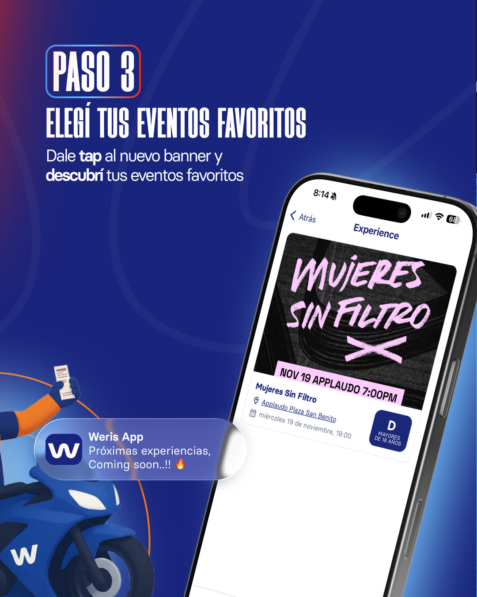
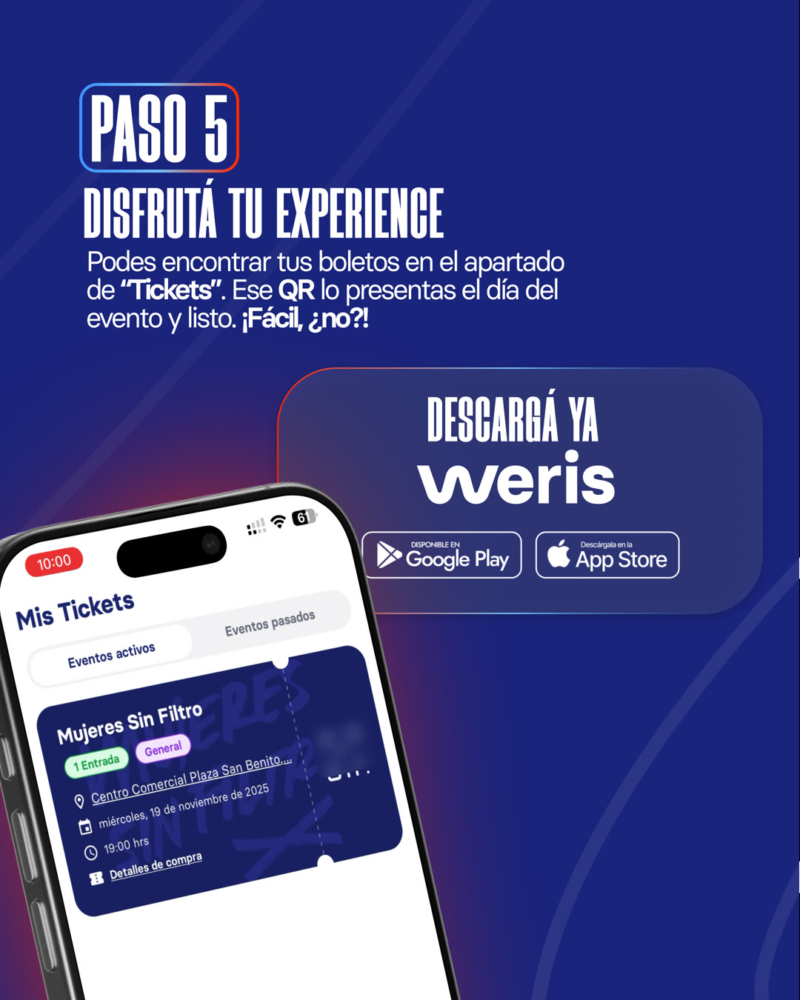
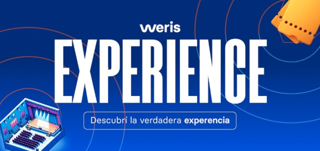
03
Fuckup Nights × Weris
Participamos como patrocinadores en Fuckup Nights, un espacio que reúne historias reales de fracaso, aprendizaje y emprendimiento. Buscamos acercar a Weris a una comunidad joven y emprendedora, conectando la marca con conversaciones auténticas sobre negocios e ideas.